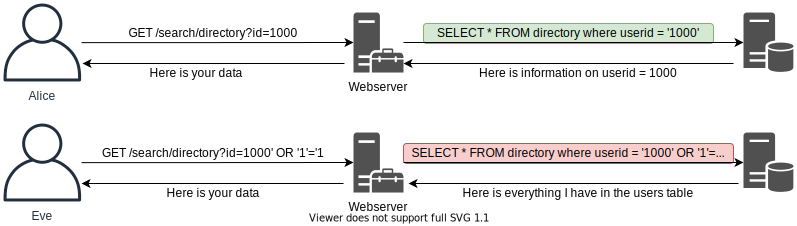
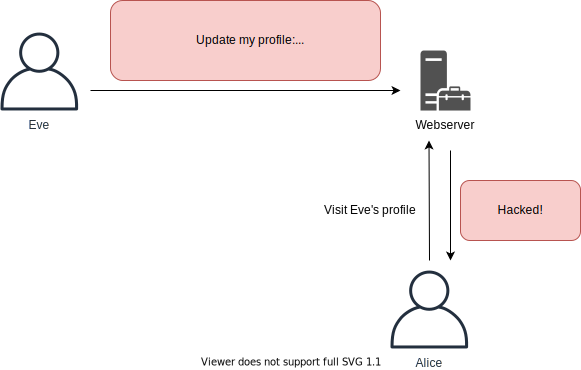
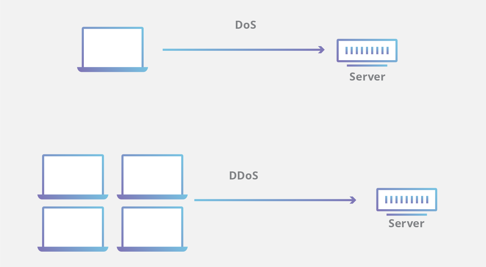
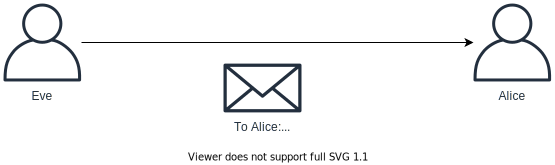

One of the most common forms of web hacking.
SQL injection is placement of malicious code in SQL statements via web page input.
The code is then used to manipulates the underlying data.

A direct attack of users of servers; XSS uses servers to attack visitors of the server.
XSS is the placement of attacker’s values, usually JavaScript, stealing things such as cookies for authentication, defacing websites, phishing users in leaving their credentials in fake login forms.
Source: https://www.w3schools.com/cybersecurity/cybersecurity_web_applications_attacks.php

IDOR happens when developers have not implemented authorisations requirements to access resources between objects.
Attackers then can test access to other points of data.
Simply changing the code to include a check of authorisation.
Source: https://www.w3schools.com/cybersecurity/cybersecurity_web_applications_attacks.php
Forcing end user to execute unwanted actions on a web application where they are authenticated.
Social engineering is used to help trick users in to executing actions of the attackers choosing.
A type of eavesdropping attack; placing in the middle of two online targets such as a user and web application.
The middle can be a bot or a person.
Phishing is a type of man in the middle attack, also explained below

A single attacker interrupt devices normal functioning, rendering unavailable to users.
Typically done by flooding a targeted site with traffic so that the usual traffic is unable to be processed.
Source: https://www.cloudflare.com/learning/ddos/glossary/denial-of-service/

Similar to DoS however this is from many distributed sources such as botnet, to launch a large volume of requests or data packets simultaneously.
Firewalls and intrusion prevention systems (IPS) can filter out malicious traffic and block requestions.
Source: https://www.cloudflare.com/learning/ddos/what-is-a-ddos-attack/
Source: https://www.splunk.com/en_us/blog/learn/security-breach-types.html
An online attack, based on trying different combinations of usernames and passwords with an application over a network, guessing weak login credentials.
Some of these attacks are on admin accounts, which use generic admin username and passwords.
Once successfully logged in, the attacker can control the account accessing emails (if hacked email account) or even system overrides (if accessed system logins).
Source: https://www.w3schools.com/cybersecurity/cybersecurity_passwords.php
An offline attack, where an attacker has access to stolen encrypted or hashed password representations cracked by using CPU ("Central Processing Unit") and GPU ("Graphical Processing Unit").
This is a more effective way of password cracking due to the computing power capability.
Source: https://www.w3schools.com/cybersecurity/cybersecurity_passwords.php

A Phishing is usually done through email with a ransomware link.
It involves coercion, tricking victims in to sharing their details or install malicious applications enabling control to attackers.
Penetration testing can identify.
Source: https://www.w3schools.com/cybersecurity/cybersecurity_prenetration_testing.php